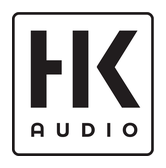
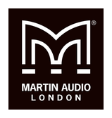
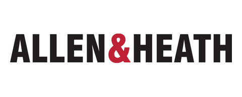
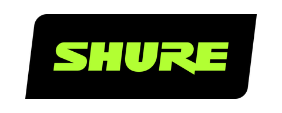
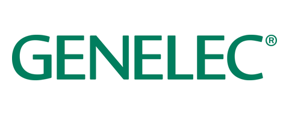
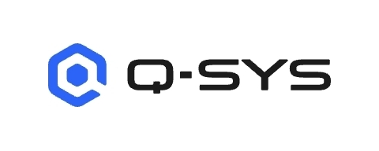
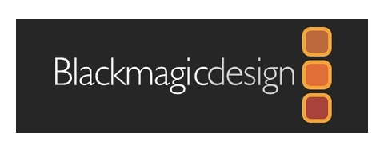
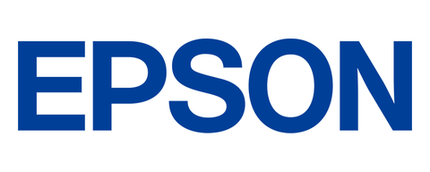
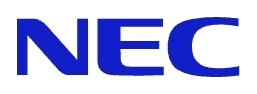

PART 01 / VIDEO
4K AI 자동추적 PTZ 카메라
화각 120° 광각 렌즈와 AI 인물 오토 프레이밍으로 발언자를 자동으로 추적하여 회의실 전원을 사각지대 없이 또렷하게 담아냅니다.
4K UHD • 120° FOV • USB 3.0 플러그앤플레이Professional Audio · Video · CCTV · Network Engineering
경기 안산·수도권 1위 AV 통합 엔지니어링 기업 아인소닉. 장비를 제각각 들이지 않고, 공간의 크기와 잔향에 맞춰 음향·영상·CCTV·네트워크를 하나의 정밀 시스템으로 1일 완성 시공합니다.
B2B Turnkey Solution • 1-Day Setup
회의실 음향·영상, 더 이상 불투명한 복잡 견적으로 고민하지 마세요. 8~12인 회의실에 최적화된 장비 선정부터 매립 시공, 음향 튜닝까지 단 하루 만에 완성하는 표준 정가제 턴키 패키지입니다.
화각 120° 광각 렌즈와 AI 인물 오토 프레이밍으로 발언자를 자동으로 추적하여 회의실 전원을 사각지대 없이 또렷하게 담아냅니다.
4K UHD • 120° FOV • USB 3.0 플러그앤플레이탁상 위 지저분한 마이크선 완전 제거. 천장에서 회의실 전 구역(반경 8m) 음성을 고르게 수음하며 에코와 주변 노이즈를 실시간 차단합니다.
DNR 잡음 제거 • 에코 캔슬링(AEC) • 8m 수음목소리 대역(1kHz~4kHz)의 명료도를 극대화 튜닝하여, 웅웅거리는 회의실 울림 없이 상대방의 작은 목소리까지 선명하게 전달합니다.
음성 명료도 EQ 튜닝 • 클래스 D 고효율 앰프테이블 위 엉킨 선 없이 케이블 하나로 화면 공유와 화상회의가 즉시 시작됩니다. 모든 배선은 천장과 벽체로 완벽히 매립 마감됩니다.
노출 배선 제로 • 1일 완공 • 1년 무상 A/S전문 엔지니어가 없어 주일마다 마이크 하울링, 유튜브 송출 오류로 불안에 떠는 교회를 위한 전담 유지관리 구독 서비스입니다. 고장 후 수리비 지출을 막고 예배의 평안을 지켜드립니다.
봉사자가 바뀌어도 방송실 운영이 멈추지 않도록, 아인소닉의 마스터 엔지니어가 교회의 전담 기술 파트너가 되어 드립니다.
안산·경기 관내 교회를 대상으로, 아인소닉 엔지니어가 직접 방문하여 음향·영상·배선의 위험 요소를 무료로 정밀 측정해 드립니다.
Acoustic Engineering & Certified Partners
아인소닉은 감(感)으로 시공하지 않습니다. REW 측정 마이크로 공간의 잔향(RT60)과 공진 주파수를 분석하여, 어떤 좌석에서도 또렷하게 들리도록 공학적으로 튜닝합니다.
Shure, Genelec, Allen & Heath 등 글로벌 최정상 프로오디오 브랜드의 국내 수입원 삼아사운드 공식 대리점으로서, 가품이나 비정상 유통 제품에 대한 우려 없이 100% 본사 공식 보증이 적용되는 정품만을 시공합니다.
Services
분야마다 다른 업체를 부르면 배선이 겹치고 책임 소재가 흐려집니다. 아인소닉은 처음부터 하나의 도면으로 계획합니다.
공간의 크기와 잔향에 맞춰 스피커 배치와 출력을 계산하고, 하울링 없이 또렷한 소리를 만듭니다.
프로젝터, 대형 디스플레이, 영상 스위칭과 송출 장비를 공간 용도에 맞게 구성합니다.
사각지대를 따져 카메라 위치를 정하고, 필요한 보관 기간에 맞춰 녹화 장비를 설계합니다.
음향·영상·보안 장비가 끊김 없이 동작하도록 전용 네트워크와 배선을 설계합니다.
전원, 음량, 영상 전환, 조명 연동을 터치 패널 하나로 조작할 수 있게 만듭니다.
Solutions
설교가 뒷자리까지 또렷하게 들리고, 찬양팀 모니터와 온라인 예배 송출까지 한 시스템으로 운영합니다.
버튼 하나로 화면 공유와 화상회의가 시작되는 회의실을 만듭니다. 천장 마이크와 스피커로 책상도 깔끔하게 둡니다.
출입구와 계산대, 주차장처럼 꼭 봐야 할 곳을 빠짐없이 담고, 휴대폰으로 언제든 확인할 수 있게 설정합니다.
강당과 강의실, 다목적실처럼 여러 사람이 번갈아 쓰는 공간을 누구나 쉽게 조작하도록 설계합니다.
Clients
기업과 교회, 교육·공공기관까지 아인소닉과 거래한 곳입니다.
고객사를 불러오는 중입니다.
Process
Brands









삼아사운드 공식 대리점협력사 디엠시정보
FAQ
배선 경로와 랙, 네트워크를 한 번에 설계하니 공사가 겹치지 않고 비용이 줄어듭니다. 문제가 생겼을 때 연락할 곳도 한 곳이라 원인을 찾고 고치는 시간이 짧습니다.
아래 문의 양식이나 전화로 연락 주시면 현장 실사 일정을 잡습니다. 실사 후 설계안과 품목별 견적서를 보내드립니다. 현장 사진을 문자(010-3599-6733)나 이메일(ainsonicav@gmail.com)로 미리 보내주시면 더 정확한 상담이 가능합니다.
가능합니다. 실사 때 기존 스피커, 앰프, 카메라, 배선 상태를 점검하고, 계속 쓸 수 있는 장비는 살려서 필요한 부분만 교체하는 안을 함께 드립니다.
카메라 수와 화질, 저장장치 용량에 따라 달라집니다. 원하시는 보관 기간을 먼저 정하고, 그에 맞춰 카메라 해상도와 녹화기 용량을 설계합니다.
공간 규모와 배선 작업량에 따라 다릅니다. 실사 후 견적서와 함께 예상 일정을 알려드리고, 예배나 영업 시간을 피해 일정을 조율합니다.
설치 후 1년간 무상 A/S를 제공합니다(소모품 제외). 시공 완료 후 6개월, 1년, 2년째에 점검 시기를 안내해 드립니다.
Contact
양식을 남겨주시면 확인 후 직접 연락드립니다. 급한 문의는 전화 주세요.
현장 사진이 있으면 문자(010-3599-6733)나 이메일로 보내주세요. 필요한 장비와 대략의 범위를 더 정확하게 안내해 드립니다.